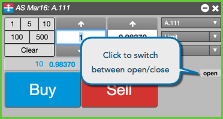
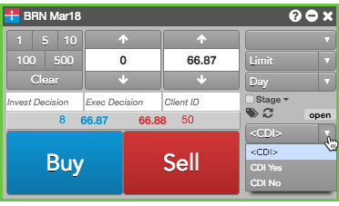
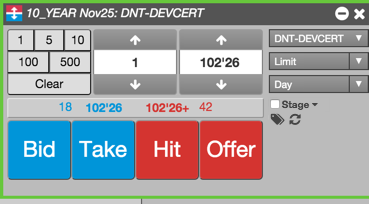

An Order Ticket exposes some additional buttons to support exchange-specific order functionality.
The ICE, Eurex, and EEX exchanges allow you to indicate whether an order opens or closes a position. To support this functionality for these exchanges, an Order Ticket displays an Open/Close toggle button, as shown:

For exchanges that need to comply with the MiFID II regulations, the Show order entry compliance fields setting in the Orders section of Preferences can be enabled to add compliance fields to the Order Ticket.

The items added include:
If specified, these values override the default order profile settings defined in Setup.
The BrokerTec exchange supports passive and aggressive orders. To support this functionality for BrokerTec orders, an Order Ticket replaces the Buy and Sell buttons with buttons for entering passive or aggressive orders.

Block trades are high volume trades in any outright or strategy product and arranged by two counterparties outside of the open market.
The Order Ticket supports submitting block trades at the following exchange: EEX.